shinydashboard is built using AdminLTE, which in turn uses Bootstrap 3.
There are a number of color themes, or skins. The default is blue, but there are also black, purple, green, red, and yellow. You can choose which theme to use with dashboardPage(skin = "blue"), dashboardPage(skin = "black"), and so on.
Blue:
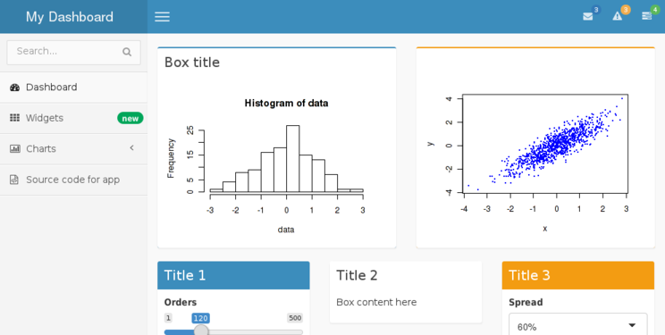
Black:
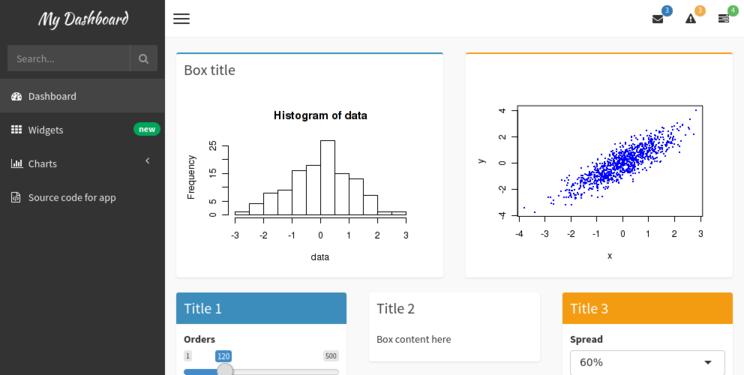
Purple:
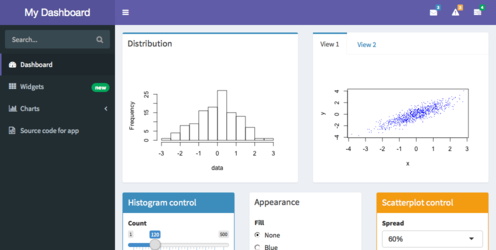
Green:
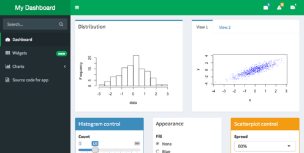
Red:
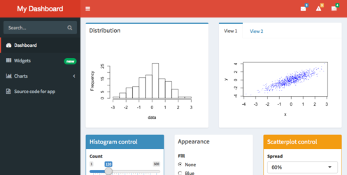
Yellow:
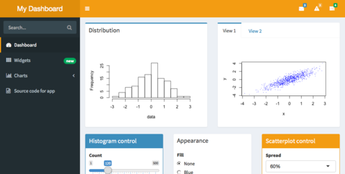
When a shinydashboard app is run with Shiny Server Pro and an authenticated user is logged in, a panel displaying the username and a logout link will appear in the upper-right corner. (This requires shinydashboard version 0.5.1 or greater for it to display.)
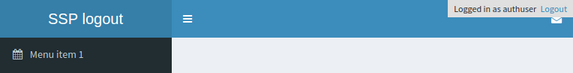
It is possible to have a logout panel that integrates more nicely with shinydashboard. As you can see in the screenshot above, the default logout panel partially obscures the dropdown menu icon. We can instead add a user panel with dynamic UI (generated on the server) and hide the default logout panel, as shown below:
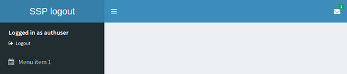
library(shinydashboard)
ui <- dashboardPage(
dashboardHeader(),
dashboardSidebar(
# Custom CSS to hide the default logout panel
tags$head(tags$style(HTML('.shiny-server-account { display: none; }'))),
# The dynamically-generated user panel
uiOutput("userpanel")
),
dashboardBody()
)
server <- function(input, output, session) {
output$userpanel <- renderUI({
# session$user is non-NULL only in authenticated sessions
if (!is.null(session$user)) {
sidebarUserPanel(
span("Logged in as ", session$user),
subtitle = a(icon("sign-out"), "Logout", href="__logout__"))
}
})
}
shinyApp(ui, server)You can add custom CSS to your app by creating a www/ subdirectory to your app and adding a CSS file there. Suppose, for example, you want to change the title font of your dashboard to the same font as the rest of the dashboard, so that it looks like this:
To do this, first create a file named www/custom.css with the following:
.main-header .logo {
font-family: "Georgia", Times, "Times New Roman", serif;
font-weight: bold;
font-size: 24px;
}Then refer to that CSS file from the UI of your app:
## ui.R ##
dashboardPage(
dashboardHeader(title = "Custom font"),
dashboardSidebar(),
dashboardBody(
tags$head(
tags$link(rel = "stylesheet", type = "text/css", href = "custom.css")
)
)
)A second way to include CSS is to put it directly in the UI code for your app:
## ui.R ##
dashboardPage(
dashboardHeader(title = "Custom font"),
dashboardSidebar(),
dashboardBody(
tags$head(tags$style(HTML('
.main-header .logo {
font-family: "Georgia", Times, "Times New Roman", serif;
font-weight: bold;
font-size: 24px;
}
')))
)
)There other ways to add custom CSS to a Shiny application. See Shiny’s CSS article for more information.
In some cases, the title that you wish to use won’t fit in the default width in the header bar. You can make the space for the title wider with the titleWidth option. In this example, we’ve increased the width for the title to 450 pixels, and also set the background color of the title area (using custom CSS) to be the same as the rest of the header bar.
shinyApp(
ui = dashboardPage(
dashboardHeader(
title = "Example of a long title that needs more space",
titleWidth = 450
),
dashboardSidebar(),
dashboardBody(
# Also add some custom CSS to make the title background area the same
# color as the rest of the header.
tags$head(tags$style(HTML('
.skin-blue .main-header .logo {
background-color: #3c8dbc;
}
.skin-blue .main-header .logo:hover {
background-color: #3c8dbc;
}
')))
)
),
server = function(input, output) { }
)Icons are used liberally in shinydashboard. The icons used in Shiny and shinydashboard are really just characters from special font sets, and they’re created with Shiny’s icon() function.
To create a calendar icon, you’d call:
icon("calendar")This simply generates HTML like this, which the browser knows what to do with:
<i class="fa fa-calendar"></i>The icons are from Font-Awesome and Glyphicons. You can see lists of all available icons here:
By default, the icon() function uses icons from Font-Awesome. To use Glyphicons, use lib="glyphicon")
"Calendar from Font-Awesome:", icon("calendar"),
"Cog from Glyphicons:", icon("cog", lib = "glyphicon")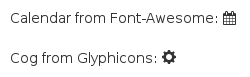
Many shinydashboard components have a status or color argument.
status is a property of some Bootstrap classes. It can have values like status="primary", status="success", and others. The image below shows which colors they usually are associated with:
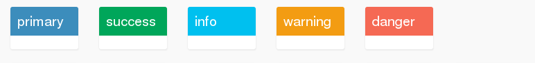
The color argument is more straightforward. It can have values like color="red", color="black", and others. Here are the names and appearances of colors:
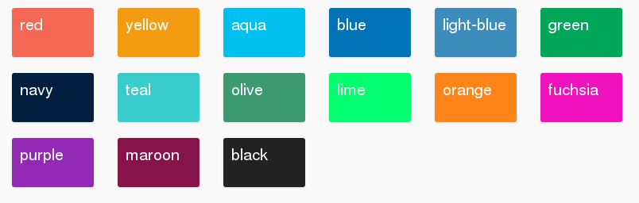
The valid statuses and colors are also listed in ?validStatuses and ?validColors.